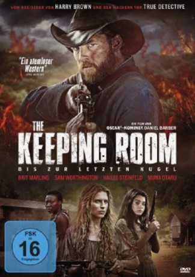

#3346 The Keeping Room: Bis zur letzten Kugel
Alternativ: The Keeping Room
 
 IMDB-Wertung: 6.0 / 10
IMDB-Wertung: 6.0 / 10  Metascore: 58
Metascore: 58 
Der US-amerikanische Bürgerkrieg zwischen Nord- und Südstaaten nähert sich im Jahr 1865 zwar seinem unausweichlichen Ende. Doch auch in den letzten Tagen des blutigen Konflikts regieren Gewalt und Tod: Für die willensstarke Augusta, die zusammen mit ihrer Schwester Louise und Sklavin Mad auf einem abgelegenen Anwesen auf das Kriegsende wartet, werden die letzten Tage des Kriegs zum Überlebenskampf: Zwei Deserteure der herannahenden Unions-Armee haben es auf die wehrlosen Frauen abgesehen...
Jahr: 2014
Dauer: 95 Minuten
FSK: 16
Land: USA Studio: Drafthouse FilmsTonspuren: DTS - ,
Untertitel: Deutsch,
Auflösung: 1080p (1920x1040) Größe: 5242 MB
Genre: Drama
Regisseur: Daniel Barber
Drehbuch: Julia Hart
Soundtrack: Martin Phipps
Darsteller:
 Brit Marling als Augusta
Brit Marling als Augusta Hailee Steinfeld als Louise
Hailee Steinfeld als Louise Sam Worthington als Moses
Sam Worthington als Moses- Muna Otaru als Mad
 Kyle Soller als Henry
Kyle Soller als Henry Ned Dennehy als Caleb
Ned Dennehy als Caleb- Amy Nuttall als Moll
- Nicholas Pinnock als Bill
- Charles Jarman als Carriage Driver
- Anna-Maria Nabirye als Alma
- Luminita Filimon als Prudence
- Delia Riciu als Mary
- Zefir als Battle
- Stefan Velniciuc als Father , uncredited
Datei: X:\2014(G-M)\Keeping Room Bis zur letzten Kugel, The (2014, FSK16, 1920x1040).mkv seit 16.03.2016
Festplatte: HD 2013(I-Z)-2014(A-Z)
 Es gibt insgesamt 136 Filme in der Gruppe '2014(G-M)'
Es gibt insgesamt 136 Filme in der Gruppe '2014(G-M)'